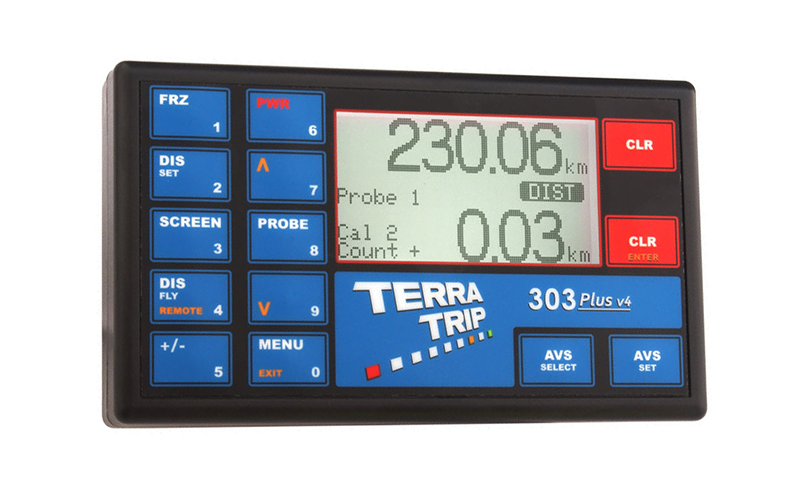

Terratrip 303 Plus
Pris: 2459kr
303 PLUS er et præcist tripmeter, der viser afstand, hastighed, gennemsnitshastighed, timing, måltidsmåltid (regelmæssighedsmåltid med valgfri visning). En valgfri fjernbetjening (del nr. T016G) kan monteres, og dette vil vise intervalafstand, hastighed eller gennemsnitshastighed. Fjernbetjeningen har også 7 LED indikatorer. Disse bruges til regelmæssig samling og viser føreren, hvor langt foran eller bagved målhastigheden er i sekunder. Valgfri fjernbetjeningsenhed er tilgængelig via enten fjernbetjening eller håndholdt fjernbetjening. Nye funktioner omfatter performance timing, som viser acceleration og deceleration 0-60, 0-100, 0-xx (brugerdefineret hastighed). Performance timing gemmer 8 resultater, og du kan se i realtid.
Specifikationer:
- Tidsindstillingsdisplayet fryser automatisk, når stopuret er stoppet, hvilket gør det nemt at kontrollere rallytidspunkter
- Total afstandsdisplay op til 999,99 og interval op til 99,99
- Tid på dagen, stopur, hastighed og gennemsnitshastighed
- Kalibrere for miles eller km
- 5 cifferkalibrering
- To kalibreringsnumre
- Hastighedsindikation
- Manuelt justerbar total afstandsdisplay. Eller hurtig på FLY-afstandsmanipulation
- Tæller op og ned facilitet
- Split (fryse) funktion
- LED-displaybelysning
- Valgfri fjernbetjening til hastighed, intervalafstand eller gennemsnitshastighed
- Fjernbetjening, der viser lysdioden for regelmæssighedsmålhastighed
- Performance timers
- To sondeindgange
- HR model, der måler 1 meter til vejmåling applikationer.